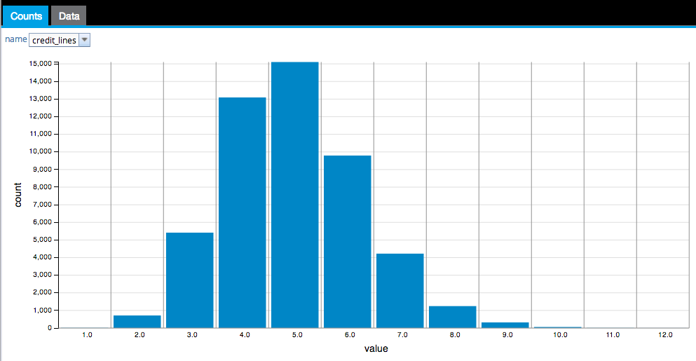
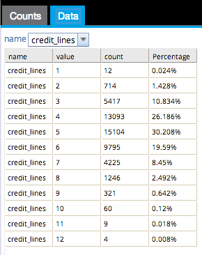

Frequency Analysis
To use Frequency Analysis to view frequency statistics of one or more selected columns.
- Database operators must output a table/view for Frequency Analysis to be enabled.
- Hadoop operators must store results for Frequency Analysis to be enabled.
- Frequency Analysis is accessible from the Explore menu of the operator toolbar or by right-clicking an appropriate operator.

